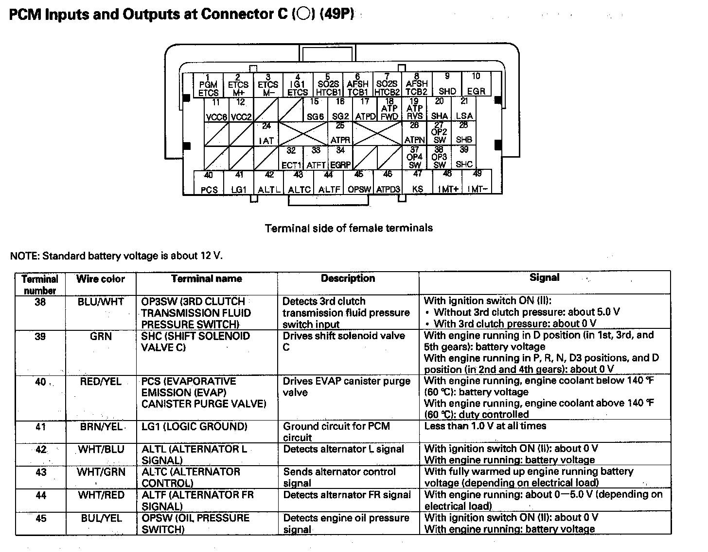

Pinout Values and Diagnostic Parameters
PCM Inputs And Outputs At Connector A (49P) Part 1:
PCM Inputs And Outputs At Connector A (49P) Part 2:
PCM Inputs And Outputs At Connector A (49P) Part 3:

PCM Inputs And Outputs At Connector A (49P) Part 4:
PCM Inputs And Outputs At Connector A (49P) Part 5:
PCM Inputs And Outputs At Connector A (49P) Part 6:
PCM Inputs And Outputs At Connector B (49P) Part 1:
PCM Inputs And Outputs At Connector B (49P) Part 2:

PCM Inputs And Outputs At Connector B (49P) Part 3:
PCM Inputs And Outputs At Connector B (49P) Part 4:
PCM Inputs And Outputs At Connector B (49P) Part 5:
PCM Inputs And Outputs At Connector C (49P) Part 1:
PCM Inputs And Outputs At Connector C (49P) Part 2:
PCM Inputs And Outputs At Connector C (49P) Part 3:
PCM Inputs And Outputs At Connector C (44P):
PCM Inputs And Outputs At Connector C (49P) Part 4:
